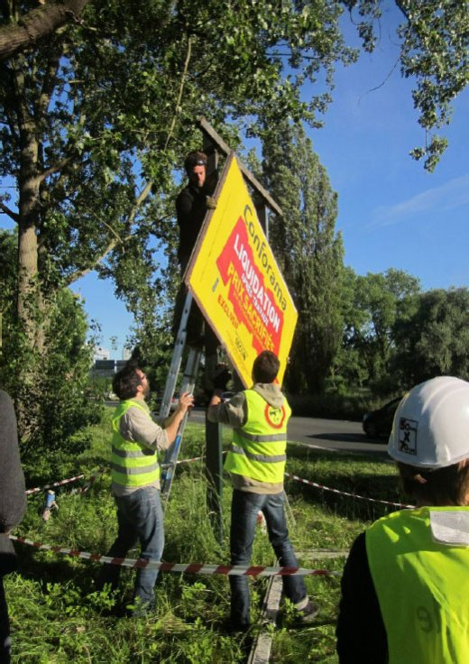
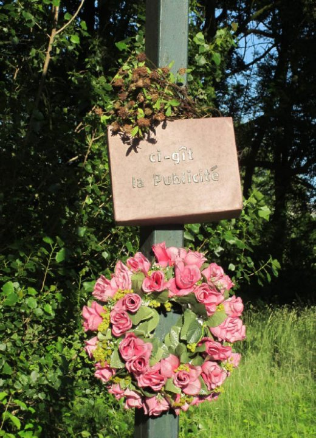

| |
Site dédié à la publication d'informations communiquées par le Collectif des déboulonneurs. En aucun cas ce site n'appelle à des actions illégales. | |
 |
||
|
Accueil du site > Lille > [Lille] 50ème action : un second panneau démonté !
18 Juin 2012 : 50ème action des déboulonneurs de Lille
Heure de l’action : 18h45 Lieu : Angle de la rue du Général de Gaulle et de l’Avenue Pierre de Coubertin (une voie rapide) Nombre de panneaux touchés : un 4m² portatif de chez Vandesompele (afficheur local) démonté Nombre d’activistes : Une quinzaine, dont 6 maniant la clé de 17. Nombre approximatif de passants-spectateurs : Beaucoup d’automobilistes. Tractage aux feux-rouges. Des klaxons de félicitation. Nombre de journalistes présents : un journaliste et un photographe de chez 20minutes et un autre journaliste de la Voix du Nord Attitude de la police : Nous avons été prévenus avant l’action que la police n’interviendrait pas. Elle n’est donc pas intervenue. Retombées presse :
Compte-rendu détailléBien qu’il ne soit pas habituel que le Collectif des Déboulonneurs de Lille démonte effectivement des panneaux publicitaires, pour « marquer le coup » du fait que ce soit sa cinquantième action, le Collectif a voulu renouveler l’action de démontage d’un panneau publicitaire comme ce fut le cas en juin 2011. Mais cette fois-ci, c’est le panneau « Vandestompeele » du carrefour situé entre la rue du Général de Gaulle et le boulevard Pierre de Coubertin à l’entrée de La Madeleine qui fut choisi. Le rendez-vous fut fixé devant le Palais de Justice de Lille, avenue du Peuple Belge. L’équipe devait se rendre à pieds au pied du panneau avec le matériel nécessaire à son démontage (échelles, clés de 15, etc …). Le panneau en question étant illégal (publicité d’ailleurs non remise à jour par l’annonceur puisqu’elle portait sur un évènement révolu), c’est presque avec la « bénédiction » de la Police que l’opération fut menée. L’opération de démontage proprement dite a commencé vers 19h15 par la délimitation d’un périmètre de sécurité à l’aide d’une bande rouge et blanche nouée sur des piquets. Elle a duré une petite demi-heure, mais a donné quelques soucis aux démonteurs dans la mesure où les boulons, rouillés, ont résisté assez fermement à l’agression de nos clés à pipe. C’est d’abord le cadre qui a été démonté, puis le panneau qui a été posé au sol à côté du cadre. Une fois le panneau démonté, la cornière inférieure sur lequel il était boulonné fut déplacée au niveau du sol. La circulation étant importante, peu de piétons se trouvaient à proximité du lieu de l’action. Le porte-voix n’a donc pas été utilisé mais pour expliquer la raison d’être de notre action, des tracts ont été distribués aux automobilistes en provenance de Lille arrêtés au feu rouge. Des photos ont été prises par les photographes, mais le journaliste de « La Voix du Nord » s’est montré peu compréhensif. Il ne s’attendait pas à effectuer un quart d’heure de marche pour venir au pied d’un panneau situé « au milieu des champs » et s’est demandé en quoi l’évènement était exceptionnel. Il aurait préféré que l’action ait eu lieu avenue du Peuple Belge, devant le Palais de Justice. Nous ne nous attendons donc pas à ce qu’il écrive un article favorable sur notre action. Une fois l’opération de démontage terminée, le panneau démonté et son cadre ont été recouverts d’un drap noir tandis qu’un autre drap noir a été noué sur la cornière supérieure du portique. Une boîte portant l’inscription « Ci-gît la publicité » et une couronne de fleurs ont été accrochées sur le montant gauche du panneau. 
Communiqué de Presse du 18 juin 2012Un second panneau démonté Un an après le premier démontage de panneau publicitaire, les déboulonneurs ont récidivé, à l’occasion de la 50e action lilloise. Une quinzaine de citoyens sont venus démonter un panneau situé sur une voie rapide. Dans une zone protégée, la publicité est interdite selon le RLP, le règlement local de la publicité. Le panneau, descendu à terre a enfin cessé de nuire à notre environnement et à la sécurité routière. Lors de cette action, les déboulonneurs, agissant à visage découvert, n’ont pas été inquiétés par les forces de l’ordre. Inlassablement et jusqu’à gain de cause, c’est-à-dire jusqu’à la réduction significative de la publicité dans l’espace public, les déboulonneurs continueront d’agir partout en France. Communiqué de Presse du 18 juin 2012
|
|
Site utilisant SPIP - Hébergement Ouvaton
|